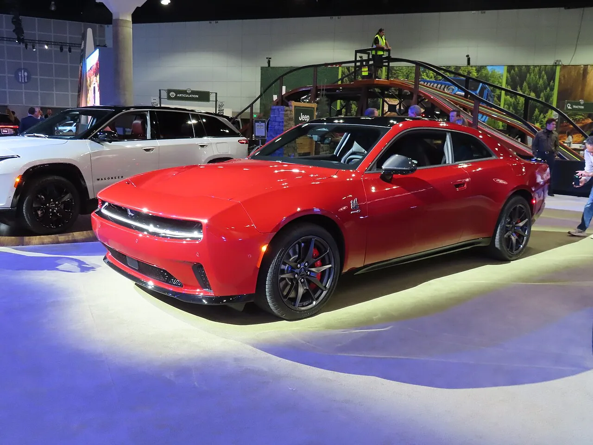
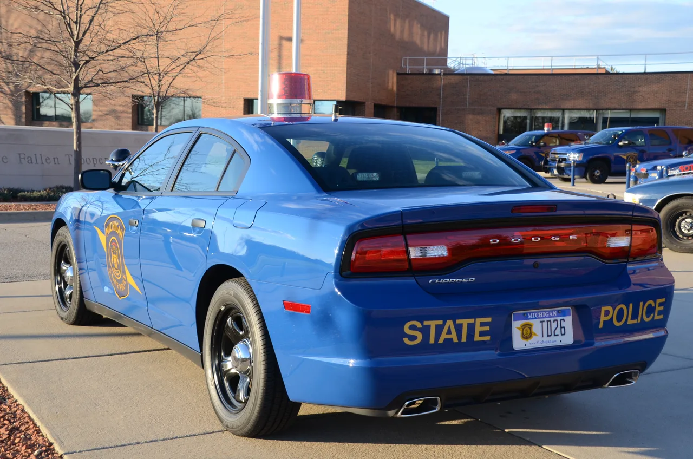
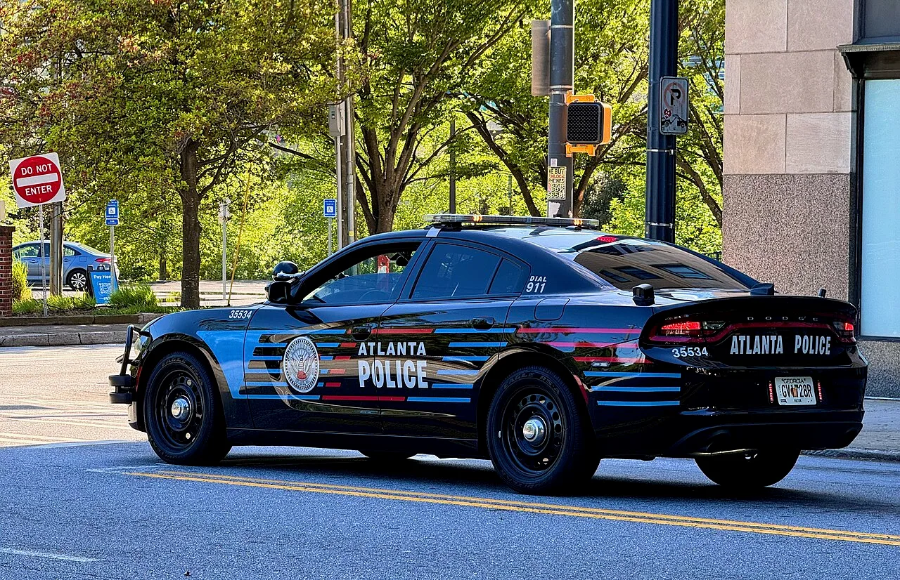

▲ 미시간 주경찰의 구형 다지 차저. 신형 차저의 경찰 사양이 준비되고 있다
다지가 신형 차저의 경찰 사양을 준비하고 있습니다. 프로토타입이 데이토나에서 열린 폴리스 플릿 엑스포에 공개됐습니다.
흥미로운 대목은 파워트레인입니다. 신형 차저에는 670마력짜리 전기 버전(데이토나)이 있는데, 경찰차에는 3.0리터 트윈터보 직렬 6기통이 들어갑니다.
그리고 이 차가 노리는 자리는 포드가 2019년에 비워둔 시장입니다.
1. 왜 전기가 아니라 가솔린인가
신형 차저 라인업에는 차저 데이토나라는 전기 버전이 있습니다. 스캣팩 사양은 670마력을 냅니다. 출력만 보면 경찰차로 부족할 이유가 없습니다.
그런데 경찰 사양에는 3.0리터 트윈터보 허리케인 직렬 6기통이 들어갑니다. 민수용 R/T 기준 420마력, 468lb-ft입니다.
이유는 경찰 차량의 사용 방식에 있습니다. 순찰차는 교대 근무 내내 시동을 켜둔 채 대기하는 시간이 깁니다. 무전기·노트북·조명·카메라가 계속 전기를 먹습니다.
전기차로 이 패턴을 소화하려면 대기 중 배터리 소모와 충전 시간이 그대로 가동률 손실이 됩니다. 추격 상황에서 배터리 잔량이 변수가 되는 것도 부담입니다.
사륜구동이 기본이라는 점도 눈여겨볼 만합니다. 눈길과 비포장을 가리지 않아야 하는 순찰 특성상 선택이 아니라 필수에 가깝습니다.

▲ 전기 버전인 차저 데이토나 스캣팩. 670마력이지만 경찰 사양은 가솔린을 택했다
2. 포드가 비워둔 7년
이 차가 나올 수 있는 이유는 경쟁자가 사라졌기 때문입니다.
포드 토러스가 2019년 단종되면서 포드는 경찰 세단 시장에서 철수했습니다. 쉐보레도 같은 길을 갔습니다. 이후 미국 경찰 차량 시장은 포드 익스플로러 폴리스 인터셉터 유틸리티가 사실상 독점해왔습니다.
즉 지난 7년간 미국 경찰이 세단을 사고 싶어도 살 곳이 마땅치 않았습니다. 구형 차저 PPV마저 단종된 뒤로는 선택지가 SUV뿐이었습니다.
세단이 SUV보다 나은 점은 분명합니다. 무게중심이 낮아 고속 추격에서 안정적이고, 공기저항이 작아 최고속과 연비에서 유리합니다.
다지가 이 공백을 노리는 구도입니다. 이미 사라진 경쟁자 덕에 시장을 독식한 사례는 앞서도 있었습니다.
3. CHP와 미시간 주경찰이 등장하는 이유
크라이슬러·다지 CEO 매트 맥알리어는 이렇게 말했습니다.
"확실히 계획의 일부입니다. 캘리포니아 고속도로순찰대, 미시간 주경찰과 적극적으로 협력하고 있습니다."
이 두 기관이 거론되는 것은 우연이 아닙니다. 미국 경찰 차량 시장에서 사실상 인증 기관 역할을 하기 때문입니다.
미시간 주경찰은 매년 경찰 차량 성능 평가를 진행합니다. 가속·제동·핸들링·최고속을 측정해 공개하는데, 이 결과가 전국 경찰서의 구매 판단 근거가 됩니다.
캘리포니아 고속도로순찰대는 자체 인증 절차를 운영하며, 미국 최대 규모 경찰 차량 운용 기관 중 하나입니다.
이 둘의 평가를 통과하지 못하면 사실상 시장에 진입할 수 없습니다. 개발 단계부터 협력한다는 것은 그만큼 진지하게 접근하고 있다는 신호입니다.

▲ 미시간 주경찰은 매년 경찰 차량 성능 평가를 진행한다. 그 결과가 구매 기준이 된다
4. 리프트백이 만든 설계 과제
프로토타입에서 눈에 띄는 것은 실내 구성입니다.
🚓 경찰 사양 실내 변경 사항
- 센터 콘솔 제거 — 무전기·단말기 거치 공간 확보
- 앞뒤 격벽 — 피의자 이송 시 운전석 보호
- 뒷좌석 칸막이
여기에 구조적 과제가 하나 있습니다. 신형 차저는 전통적인 트렁크 세단이 아니라 리프트백입니다.
트렁크 세단은 뒷좌석과 적재 공간이 철판으로 완전히 분리돼 있습니다. 리프트백은 실내와 화물칸이 하나로 이어집니다.
경찰차에서는 이 차이가 중요합니다. 뒷좌석에 탄 사람이 화물칸의 장비에 손을 뻗을 수 있느냐가 안전 문제로 직결되기 때문입니다. 격벽과 칸막이를 새로 설계한 이유가 여기에 있습니다.

▲ 애틀랜타 경찰의 차저 퍼슈트. 신형은 리프트백 구조라 격벽 설계가 새 과제가 됐다
5. 일정 — 빨라야 2027년 말
출시 시점은 빨라야 2027년 말입니다. 주문 접수는 2027년 여름에 열릴 것으로 전해졌습니다.
지금이 2026년 8월이니 1년 이상 남았습니다. 경찰 차량은 인증 절차와 기관별 평가에 시간이 오래 걸립니다.
제원도 확정 전입니다. 420마력·468lb-ft는 민수용 R/T 기준이고, 경찰 사양은 냉각·서스펜션·전기 계통이 달라지면서 출력 세팅이 바뀔 수 있습니다.
한 가지 덧붙이면, 다지는 내연기관 고성능 모델을 다시 늘리는 방향으로 움직이고 있습니다. 바이퍼 후계로 거론되는 코퍼헤드도 그 흐름의 일부입니다.
6. 정리
다지가 3.0리터 트윈터보 허리케인 직렬 6기통을 얹은 차저 경찰 사양을 준비 중입니다. 민수용 기준 420마력·468lb-ft, 8단 자동에 사륜구동이 기본입니다.
노리는 자리는 포드 토러스가 2019년 단종된 뒤 비어 있던 경찰 세단 시장입니다. CHP와 미시간 주경찰과 협력하며 개발 중이고, 리프트백 구조 때문에 격벽 설계를 새로 하고 있습니다.
출시는 빨라야 2027년 말이고 경찰 사양의 최종 제원은 아직 나오지 않았습니다. 다만 670마력 전기 버전을 두고 가솔린을 택했다는 사실만으로도, 현장이 무엇을 우선하는지는 분명히 드러납니다.